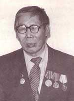

Знаменитые эвенки

Иннокентий Петрович Увачан
(2 октября 1919 — 14 декабря 1943) — участник Великой Отечественной войны, повозочный роты связи 276-го гвардейского стрелкового полка 92-й гвардейской стрелковой дивизии 37-й армии Степного фронта, гвардии рядовой, Герой Советского Союза.

Оегир Николай Константинович
(1926 - 1988) Талантливый эвенкийский поэт, фольклорист. Сочинять стихи он ни у кого нигде не учился. Наверное, просто назрела такая потребность – все что он видел, все, что чувствовало его сердце, все, к чему тянулись его мысли, выразить посредством стиха, яркими лаконичными образами.

Хоменко Владимир Денисович
Уникальный эвенкийский певец с украинской фамилией. И это как определение его судьбы, его творчества, его места в жизни. Он вырос в музыкальной семье.